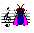

BarFly supports a number of useful extensions to the current abc format. Some of these may be included in the next version of abc, and some are supported by other abc programs. Be aware, though, that if you use them, not all of the other abc programs will be able to make sense of your music.
The W: field of abc1.6 allows you to write words of songs under the music. The string of words is simply drawn as entered, and if you wish to place each word under the corresponding note(s), you must space the words out appropriately. The trouble with this is that another abc program may use a different font for the words, making the spacing wrong. Michael Methfessel introduced the use of the w: (lower case) field to get round this in his program abc2ps. Here each word is aligned with and centred on the (numerically) corresponding note on the line above. Words can be broken into syllables using hyphens (each syllable is then treated as a separate word) and where more than one note falls on the same word, you can indicate this by adding asterisks after the word. Each asterisk is treated as an "invisible" word. You can also use the underscore character in place of the asterisk, which causes a horizontal line to be drawn from the end of the word to the position of the last corresponding note. You can have multiple lines of words (using either W: or w:) under each line of music, but extra verses after the end of the music must use the W: field.
Take a look at The Green Linnet for an example of how this is used.
Guitar chords in abc are written between double quotes e.g. "Am", and BarFly can draw them either above or below the staff (it's a option in the Viewer Preferences dialog). This has often been used to place text annotations in the music. However, this causes problems for programs which play or transpose the guitar chords. In order to mark such text annotations out as different from guitar chords you can precede them with one of the four characters ^ _ < or >. These will not be drawn in the music, but determine where the annotation is to be drawn, above, below, to the left or right of the symbol which follows respectively. The < and > symbols place the annotation level with the head of the note, and are intended for use when placing fingering markings on chords. You may have to use the invisible rest character y here (see below) to make space for the numbers. One special word is 'segno', which when it is used in an above-staff annotation is replaced by the symbol to which it refers, so for example you can write "^D.C. al segno" at the end of a piece, to signify that it should be repeated from the beginning up to the position of the segno (which is marked with a W). BarFly's player won't recognise this instruction - its for human readers only. You can use text annotations within chords e.g. F#diminished on guitar is ["<1"^D"<2"A"<1"C"<3"^f] on bar-lines and on visible or invisible rests.
Another extension introduced by Michael Methfessel is the use of the letter "x" as an invisible rest. This can be placed anywhere you can use a normal rest, but is not drawn in the music; it simply acts as a spacer, moving apart the notes on either side. This is useful when you are trying to fit complex guitar chords or long words against few notes. BarFly also lets you use the letter "y" for the same purpose - the difference is that x is played as a rest, while y has no effect on the sound whatsoever.
Some music either has no meter, or the note timings are so complex that you would have to use a separate M: field for each bar in order to transcribe it accurately. Some examples would be slow airs, many ballad tunes and gregorian chant. It makes no sense to clutter up the music with lots of M: fields, as this actually makes it harder to read, so BarFly permits the entry of "none" in the main M: field. The default note length is then taken as an eighth, and the bar lines can be placed anywhere you want (except that BarFly needs a bar line at the end of each line of music as it will only break lines on a bar).
BarFly can draw several different clefs. You may specify which clef is to be used by adding its name to the K: field e.g.
K:Am BassThe legal entries here are:
The Doh and Fa clefs are used in Gregorian Chant notation, the number which follows indicates which line of the four-line staff the clef is placed on.
In addition, you can also specify that the music should be played an octave higher or lower than written by adding either '+8va' or '-8va' to this field.For an example see St Louis Tickle
Music has hundreds of symbols, all of which someone somewhere finds essential to the particular musical genre which interests him. abc as currently defined has to represent all of these with the letters H to Z. BarFly allows these symbols to be re-defined using the U: field, so that a large number of symbols can be used, provided that you don't need more than 19 in any one piece of music. This version of BarFly recognises the following extra symbols:
| T | Trill |
| M | Mordent |
| P | Lower Mordent (Pralltriller) |
| L | Emphasis mark (or vertical episema in Gregorian notation) |
| H | Fermata |
| I | Inverted fermata |
| S | Short phrase mark |
| R | Medium phrase mark |
| Q | Long phrase mark. |
| K | Horizontal episema (in Gregorian notation only) |
| W | Segno |
All of these are treated as 'accents', in other words the letter must immediately precede the note to which it applies. All of them are drawn in the music, and the two fermata are also played: you can set the factor by which they lengthen or shorten the note to which they apply using the Player Preferences dialog. This is a multiplication factor and can have any value between 0.1 and 9.9 (1.0 would leave the note length unchanged). The trill and the mordents can be played by means of macros, there is a macro file supplied for this purpose. The emphasis is currently not played, and the three phrase marks are used to mark alignments between words and music, and so have no audible effect.
You will probably not want to redefine these symbols yet, but if you wish to you can. For example, to have the letter N stand for a trill, you would write:
U: N = trill
This does not affect the original default definition; both N and T will now be recognised as a trill. To cancel the original definition you must either define T to mean something else, or write:
U: T = nil (T will now be ignored)
The program will only accept one definition in each U: field; use multiple fields for multiple definitions.
The ability to have multiple letters stand for the same symbol can be useful, for example in the case of the trill, there are many different ways of playing it. If you need more than one version of the trill in the same tune, you can define several letters to mean 'trill', then write a separate macro for each letter. All will be shown on the music as 'tr', but each will play differently.
Symbol definitions can be written either in the tune header (apply to this tune only), in the file header (apply to all tunes in this file) or in a global macro file (apply to all tunes). You can have symbol definitions and macros in the same file. Only the capital letters H to Z can be used in symbol definitions. The names of the symbols to which they apply must be written as a single word, although they are not case-sensitive. This is the current list of legal names:
BarFly has a system of macros which is principally used to define the way in which ornament symbols such as the tilde "~" are played (although it could be used for many other purposes). There are two kinds of macro, called Static and Transposing.
You define a static macro by writing into the tune header something like this:
m: ~G3 = G{A}G{F}G
When you play the tune, the program searches the tune header for macro definitions, then does a search and replace on its internal copy of the text before passing that to the parser which plays the tune. Every occurence of ~G3 in the tune is replaced by G{A}G{F}G, and that is what gets played. Only ~G3 notes are affected, ~G2, ~g3, ~F3 etc are ignored.
You can put in as many macros as you want, and indeed, if you only use static macros you will need to write a separate macro for each combination of pitch and note-length. Here is an example:
X:50
T:Apples in Winter
S:Trad, arr. Paddy O'Brien
R:jig
E:9
m: ~g2 = {a}g{f}g
m: ~D2 = {E}D{C}D
I:speed 350
M:6/8
K:D
G/2A/2|BEE dEE|BAG FGE|~D2D FDF|ABc ded|
BEE BAB|def ~g2 e|fdB AGF|GEE E2:|
d|efe edB|ege fdB|dec dAF|DFA def|
[1efe edB|def ~g2a|bgb afa|gee e2:|
[2edB def|gba ~g2e|fdB AGF|GEE E2||
Here I have put in two static macros, since there are two different notes in the tune marked with a tilde.
A static macro definition consists of four parts:
The target string can consist of any string up to 31 characters in length, except that it may not include the letter 'n', for reasons which will become obvious later. You don't have to use the tilde, but of course if you don't use a legal combination of abc, other programs will not be able to play your tune.
The replacement string consists of any legal abc text up to 200 characters in length. It's up to you to ensure that the target and replacement strings occupy the same time interval (the program does not check this). Both the target and replacement strings may have spaces embedded if necessary, but leading and trailing spaces are stripped off so
m:~g2={a}g{f}g
is perfectly OK, although less readable.
If your tune has ornaments on lots of different notes, and you want them to all play with the same ornament pattern, you can use transposing macros to achieve this. Transposing macros are written in exactly the same way as static macros, except that the note symbol in the target string is represented by 'n' (meaning any note) and the note symbols in the replacement string by other letters (h to z) which are interpreted according to their position in the alphabet relative to n. So, for example I could re-write the static macro m: ~G3 = G{A}G{F}G as a transposing macro m: ~n3 = n{o}n{m}n. When the transposing macro is expanded, any note of the form ~n3 will be replaced by the appropriate pattern of notes. Notes of the form ~n2 (or other lengths) will be ignored, so you will have to write separate transposing macros for each note length.
Here's an example:
X:35 T:Down the Broom S:Trad, arr. Paddy O'Brien R:reel E:9 I:speed 350 M:C| m: ~n2 = (3o/n/m/ n % One macro does for all four rolls K:ADor EAAG~A2 Bd|eg~g2 egdc|BGGF GAGE|~D2B,D GABG| EAAG ~A2 Bd|eg~g2 egdg|eg~g2 dgba|gedB BAA2:| ~a2ea agea|agbg agef|~g2dg Bgdg|gfga gede| ~a2 ea agea|agbg ageg|dg~g2 dgba|gedB BA A2:|
A transposing macro definition consists of four parts:
The target string can consist of any string up to 31 characters in length, except that it must conclude with the letter 'n', followed by a number which specifies the note length.
The replacement string consists of any legal abc text up to 200 characters in length, where note pitches are defined by the letters h - z, the pitches being interpreted relative to that of the letter n. Once again you should ensure that the time intervals match. You should not use accidentals in transposing macros (I can't for the life of me think of a way to transpose ~=a3 or ~^G2 which will work correctly under all circumstances, so if you need to do this you must use a static macro.)
Global macros
If you have a file with 500 tunes in it, inserting macro definitions into each tune header would involve a great deal of work, so BarFly allows you to put macros in two other places and have them apply to all the tunes involved.
© 1998 Phil Taylor. All rights
reserved.